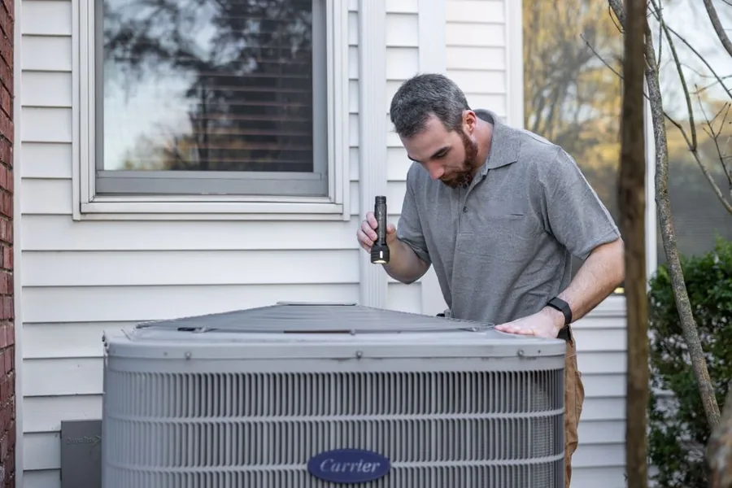
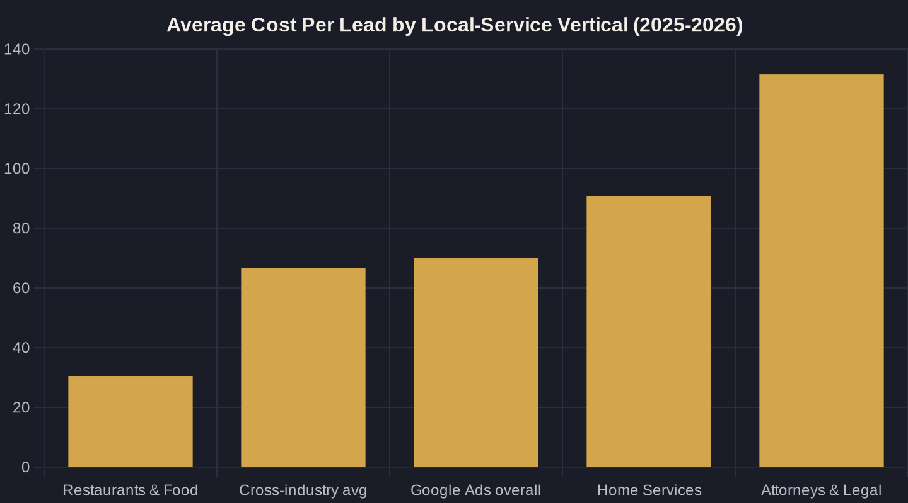

Google Ads Bidding Strategies for Local Service Businesses
Your bid strategy decides how hard Google competes for every "near me" search — and how much each booked job costs you. Here is how to pick the right one, when to switch, and the numbers you need before you do.
Key takeaways
- Your bid strategy is earned, not chosen on day one — clean conversion tracking and volume come before any automation.
- Know your vertical's cost-per-lead benchmark (home services ~$90.92, legal ~$131.63) and beat it before you switch strategies.
- Don't move to Target CPA until you have at least 30 conversions in the last 30 days — Smart Bidding starves without volume.
- For local service businesses, count phone calls as conversions: nearly half of home-services calls close during the call.
- Automated bidding can lift conversions 15-30%, but only with enough data behind it — match the strategy to the volume you actually have.
What a Google Ads Bidding Strategy Actually Decides
Every time someone in your service area searches "emergency plumber near me," Google runs an auction in milliseconds. Your Google Ads bidding strategy is the instruction set that tells Google how hard to compete in that auction — how much a click, a call, or a booked job is worth to you. Get it right and you buy customers at a known cost. Get it wrong and you either overpay for clicks that never call, or bid so low your ad never shows.
Here is the part most owners miss: the bid strategy is not where you start. It is a decision you earn after you have clean conversion tracking and enough volume to make the math real. This post walks through which strategy fits your business, when to switch, and the numbers you need first. It sits under our broader Google Ads for Local Service Businesses: The Complete Playbook, so start there if you are building an account from scratch.
Start With the Numbers a Good Bid Has to Beat
You cannot judge a bidding strategy without a baseline. Across more than 16,000 US search campaigns, the 2025 Google Ads benchmarks from WordStream (LocaliQ) put the average cost per click at $5.26, the average cost per lead (CPL = what you pay for one form fill or call) at $70.11, and the average conversion rate at 7.52% — with CPC up nearly 13% year over year. That rising-cost trend is the whole reason bid discipline matters more now than it did three years ago.
Those averages hide big swings by vertical. LocaliQ's industry benchmark data shows attorneys paying $131.63 per lead while restaurants pay $30.57, against a cross-industry average of $66.69. For home services specifically, the 2025 home-services benchmarks show an average CPL of $90.92 — and cost per lead rose for 69% of home-services businesses last year. Know where your vertical sits before you let Google bid on your behalf. (See How Much Should You Spend on Google Ads? for turning these into a monthly number.)

The Main Bidding Strategies, in Plain English
Google offers a handful of bid strategies, but for a local service business only five matter. Two are manual or click-focused and need no conversion history. Three are "Smart Bidding" — Google uses auction-time signals to bid for outcomes, but they only work once you have fey it enough data to learn from.
The table below maps each one to what Google optimizes for, the conversion volume it needs, and the kind of business it fits. The right answer is rarely the most automated option — it is the most automated option your data can support. Picking a Google Ads bidding strategy your account cannot feed is the single most common reason local campaigns stall.
- Manual CPC and Maximize Clicks buy traffic. Use them to gather data, not to grow profitably.
- Maximize Conversions and Target CPA buy leads at a cost you can predict.
- Target ROAS buys revenue — but only if you pass real job values back into Google.
Manual vs. Automated: When Each One Wins
Manual CPC gives you total control: you set the maximum you will pay per click, and nothing moves without you. That control is exactly what you want in a new account with thin data — but it does not scale, because you are guessing at the value of each search instead of measuring it. Automated bidding flips that. In Google's own beta, advertisers who switched to auction-time (Smart) bidding saw conversions rise 15% to 30% at the same or better return.
That upside is real, but it is not free. Smart Bidding needs conversion volume to learn, and it needs you to be bidding toward the right event — a booked job, not a button click. The practical rule for a local owner: start manual to prove your tracking and your offer, then graduate to automated once the data is clean. If you are still deciding whether paid search is even your best channel, weigh it against Local Services Ads vs Google Ads before you optimize bids at all.
| Bid strategy | What Google optimizes for | Conversion data needed | Best for |
|---|---|---|---|
| Manual CPC | Clicks at the max price you set | None | New accounts; tight control while you gather data |
| Maximize Clicks | The most clicks for your budget | None | Early traffic before tracking is trusted |
| Maximize Conversions | The most leads for your budget | ~15-30 conv / 30 days | Steady lead flow once call tracking is clean |
| Target CPA | Leads at a set cost per lead | 30+ conv / 30 days | A known, stable cost per booked lead |
| Target ROAS | Revenue per dollar spent | 30+ conv with job values | Owners passing real revenue values to Google |

You Need Conversion Volume Before Smart Bidding Works
This is where most local accounts get hurt. Owners hear that automated bidding lifts conversions, flip the switch on day three, and watch costs spike while the algorithm flails for data that does not exist yet. Smart Bidding is a learning system — starve it and it guesses badly.
Google is specific about the threshold: it recommends evaluating Target CPA performance over the last 30 days with at least 30 conversions. Read that as a floor, not a target. If your campaign is producing five or ten leads a month, you do not have a bidding problem — you have a volume problem, and the fix is better keywords and budget, not a fancier bid strategy. Choosing your terms well is half that battle; see Choosing (and Blocking) the Right Google Ads Keywords for Local. Hit 30-plus conversions in 30 days first, then let a Google Ads bidding strategy like Target CPA take the wheel.
Bid Toward Booked Jobs and Calls, Not Clicks
A bid strategy is only as good as the conversion it chases. If Google is optimizing for clicks or page views, it will happily buy you cheap traffic that never picks up the phone. For local service businesses, the conversion that matters is almost always a call. In Invoca's analysis of more than 60 million phone calls, 46% of home-services phone leads convert to customers during the call, and 37% of calls from digital marketing are leads.
That means call tracking is not optional — it is the foundation your bidding sits on. Feed phone calls back into Google as conversions (with a sensible minimum call length so spam does not count), and a Maximize Conversions or Target CPA strategy starts bidding toward the thing that actually pays you. This is the core of Owner's Math: every bid traced to a booked job and a dollar of revenue, not a vanity click.
A Bid-Strategy Sequence That Works for Local Owners
Put it together and the path is simple. Stage one: launch on Manual CPC or Maximize Clicks, with call and form tracking verified, and let it run until you have real data. Stage two: once conversions are landing consistently, move to Maximize Conversions to let Google bid toward leads instead of clicks. Stage three: when you clear 30-plus conversions in 30 days at a stable cost, graduate to Target CPA and set the cost per lead you can profitably pay — anchored to your vertical's benchmark, not a number you wish were true. Stage four, optional: if you pass back job values, Target ROAS lets Google bid for revenue.
Most local accounts never need anything more complex than that. The mistake is skipping stages — reaching for automation before the data exists to support it. Match the Google Ads bidding strategy to the volume you actually have, and the algorithm becomes a force multiplier instead of a money pit.
If you want a second set of eyes on where your account sits in that sequence — and what one change would move your cost per booked job — that is the kind of thing I dig into on a call, and break down in plain Owner's Math in the newsletter.
Sources
- WordStream (LocaliQ) — 2025 Google Ads Benchmarks (2025)
- LocaliQ — Search Advertising Benchmarks for Every Industry (2026)
- LocaliQ — 2025 Home Services Search Advertising Benchmarks (2025)
- Google (blog.google) — Google Ads auction-time bidding comes to Search Ads 360 (2019)
- Google Ads Help — About Target CPA bidding (2026)
- Invoca — Home Services Call Conversion Benchmarks Report 2025 (2025)
Want this run on your numbers?
Book a call and we will run the Owner's Math on your business — clear numbers, a straight plan, no pitch. Or read the free Playbook first.